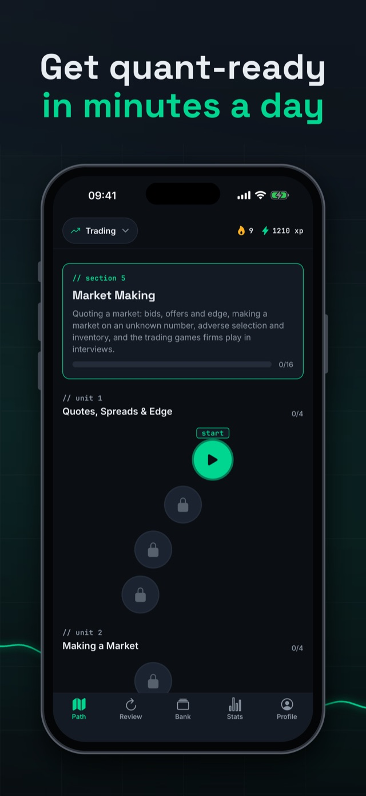

quant blitz
Quant interview prep in a few minutes a day.
- 1,424 questions on probability, brainteasers, market making, options and C++
- Mental maths speed drills, against the clock
- Every answer explained, with a review queue for what you miss
Free on iPhone
